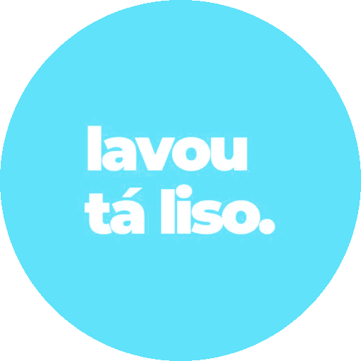
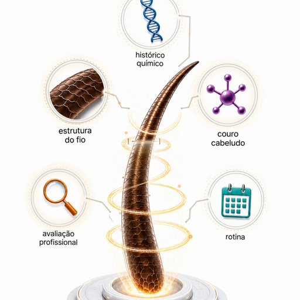

Eleve o nível do seu salão.
Ela é 100% editável.
Veja como é fácil montar a sua:
Roda no tablet que você já tem.

lavoutalisoLAVOU TÁ LISO ® · 51,3 mil seguidoresRoda no tablet que você já tem.

Pronta pra baixar.
Personalize do seu jeito
Pague, teste por 7 dias e se não gostar devolvemos seu dinheiro!
Assinar agora